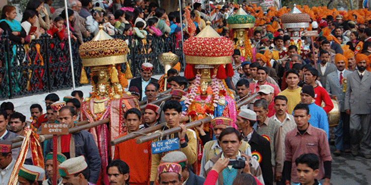

Fair and Festivals of Himachal Pradesh
Himachal Pradesh is a land of cultural diaspora! Words fail to define the mixture of different cultures one
can see here. For the people of Himachal Pradesh, every day is nothing less than a celebration or
jubilation. The festivals vary in terms of scale but most of them are attended by huge crowds who want to
carry forward the rich legacy and rituals of their ancestors.
Every monastery, temple, church, gurudwara stages its own celebration, featuring parades of deities in
gleaming golden silver canopies, performance of traditional dances like mask dance, thrilling adventure
activities and ritual dramas. In Himachal Pradesh, every festival is celebrated in peace or by dancing the
hours away in carefree ab
Halda festival – Welcome the New Year
Dedicated to the goddess of wealth, Shashikar Apa, Halda festival is celebrated with great zeal and
enthusiasm in order to celebrate the new year. The actual date of the celebration is decided by the Lamas.
People of Lahaul districts come together and enjoy their new year by performing music.
Lamas also choose a different site to execute an old ritual as per which, every household carries few
branches of a cedar tree to perform a bonfire. The bonfire signifies the unity of the community. It is more
popular in the valleys of Keylong, River Chandra and River Bhaga.
When: January
Where: Lahaul district
Special Attraction: Dancing Acts, Musicals
Duration of Festival: 2 Days
Sazo
The most awaited festival of Himachal Pradesh, Sazo is celebrated to bid adieu to the village deities.
During the festival, the doors of the temples remain closed, but the wagons of god and goddesses remain
open. It is believed that on this day, various deities abode to heaven for a short nap. The ritual signifies
that God showers good things from heaven on its devotees. Therefore, the village people clean and polish the
floors of the temples to receive God's blessings. Throughout the festival, villagers are filled with joy and
ecstasy.
On this day, priests of the temples are deeply revered as they are considered as the representative of the
deity. In some villages, priests of the temple go from one house to another just to sniff the incense.
Villages give the priest a cordial reception; as a regard they also gift them food grains and gifts, a small
ritual known as the Deacher and Deokhel. Poltus, Rice, Pulses, Vegetables, Meat, Halva, Chilta are some of
the dishes prepared by the villagers on this occasion.
When: January
Where: Kinnaur
Special Attraction: Dancing Acts, Musicals
Duration of Festival: 1 Day
Lohri /Maghi
Lohri is a feisty festival celebrated by the people of Himachal Pradesh, Haryana and Punjab. In the villages
of Punjab, Lohri is celebrated as a ceremonial ritual to jumpstart the harvesting of Rabi crop. Lohri
festival is famous by the name of Maghu as well because it coincides with the onset of 'Magh' month which
commences just a day before.
On this festival, people dress in vibrant clothes and prepare dance performances. Children sing folk songs
and go door to door, especially to the newly married couples consciously to collect funds for community
bonfire. Around dusk, people from different households come together and lit a bonfire. People throw pop
cans and puffed rice in the flames as a way of offering sacrifice to God so that they get blessed with a
rich harvest. People from different communities come together for the grand holy celebration. On the whole,
Lohri celebrates oneness and encourages people to rise above personal differences.
When: 13th January
Where: All over Himachal
Special Attraction: Bonfire, dancing acts
Duration of Festival: 1 Day
Himachal Winter Carnival

To promote the culture of Himachal Pradesh, a winter carnival is organized every year in Manali. Himachal
Pradesh started the trend of Winter Carnival back in 1977 and now after almost three decades the festival
has become bigger and better! During this festival, the ski slopes of Manali are invaded by adventure
enthusiasts. Another major highlight of the festival is the beauty contest known as the "Winter Queen" and
"Mr. Manali"
A procession is also organized from the Hadimba Devi temple. The complete stretch of Manali mall road looks
like a carnival. Right from folk dance to entertaining skits, a lot of things can be explored in this
festival. People on a tour to Himachal Pradesh can't afford to miss the Himachal Winter Carnival. Other than
enjoying the Himachal Winter Carnival in Manali, tourists have an opportunity to visit The Manacle Gompa,
Vashisht Springs, Jagatsukh, Manu Temple and Hadimba Temple.
When: 2nd January to 6th January
Where: Manali
Special Attraction: Skiing Championship, Himachali Food Festival, Craft Bazaar, Local Band Competition,
Folk Dances, Street Plays, and Adventure Sports.
Duration of Festival: 1 Day
Losar Festival
The New Year celebration of Tibetans, Losar festivals takes place in the first week of the first lunar month
(February), with performances of Tibetan opera and prayer ceremonies being held at various monasteries. A
day prior to the New Year, Nyi Shu GU is celebrated which is a ritualistic tradition. Special noodles called
Thukpa Bhatuk are consumed on this day (Nyi Shu GU). During this festival, the local deity is worshipped. It
is also believed that the Losar festival originated during the Pre-Buddhist period in Tibet when Bon was the
religion followed in the country.
The First day of the festival is known as the 'Lama Losar' or the festival of the Guru and His Holiness The
Dalai Lama', the spiritual head of the Tibetans is worshiped on this day. During the festival, Chaam dance
is performed which features elaborated mask and costumes. The dance presents the story of how the cruel
Tibetan king, known by the name of Langdarma, was killed in the 9th century, leading to the ultimate triumph
of good over evil. The weird masks used in the dance have also earned it the name the 'Devil Dance'.
When: Between the months of January end and March
Where: Throughout Himachal
Special Attraction: Mask Dance
Duration of Festival: 15 days
Doongri Festival, Kullu

Doongri festival or Hadimba Devi fair is celebrated in Kullu in honor of and to celebrate Hadimba Devi’s
(wife of Bhima) birthday. A huge fair is organized on this day; during the festival one can catch glimpses
of dance and musical performances by local artists. Since the festival is celebrated on ‘Basant Panchami’,
one can see colourful flowers blooming on Kullu valley. Moreover, little colorful kites also cover the skies
to mark the spring festival, termed as “Basant Panchami.” Freshness, aroma, and vibrancy of flowers all
around the valley gives the tourist the most blissful time of their lives.
When: May
Where: Kullu
Special Attraction: Folk dance and music performances by the local artist
Duration of Festival: 1 Day